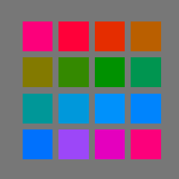
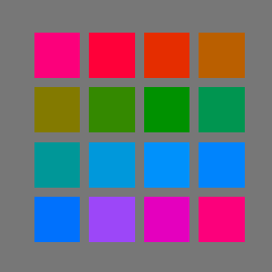
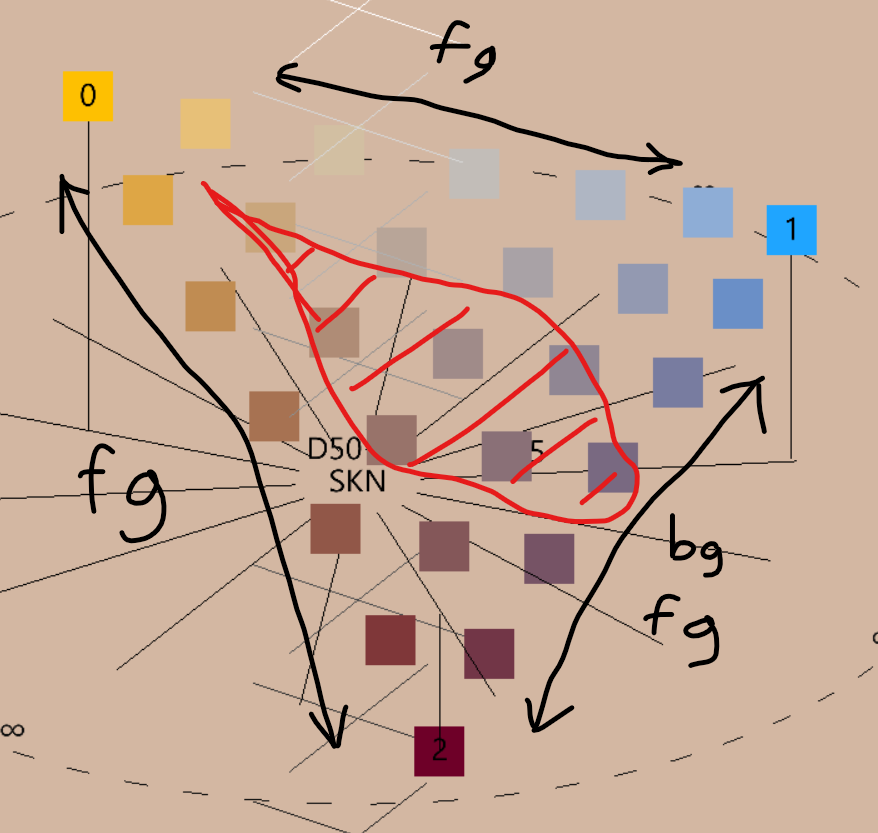

HYCOL is a color space I’ve designed which represents colors as points in a hyperbolic geometry. Specifically, a color is represented by its luma (aka luminance, or value), and chroma (aka chromaticity), and chroma is understood as a point of the two-dimensional hyperbolic plane, , while luma lies on a half-line. HYCOL is constructed to have, to reasonable accuracy, the following useful properties:
I want the enforcement of these principles to only really be realized within the sRGB gamut and for LCD screens, which is a small subset of the full gamut of physically realizable colors, and then also only really within the range of variation in digital displays and viewing conditions around the sRGB standard.
This colorspace is assembled by using several known insights from the literature in combination. These sources are:
It’s well known that color spaces based on addition of three primaries, like forms of RGB (the difference with sRGB is immaterial for the present discussion), are highly non-uniform and unsuitable for our purposes. CIELAB, CIELUV, CIECAM02, etc. and similar do improve considerably on these aspect as best as possible while mantaining a Euclidean metric. However, they do not account correctly for two phenomena that I think are very important for color perception in digital art: hue superimportance and the Helmholtz-Kohlrausch effect. In addition, the inaccuracy of the metric has further negative implications in the colorspace’s ability to perform blending and illumination changes in a way that matches up with the expectation of an artist and a consumer of art.
Hue superimportance is the observation that for saturated colors variations in hue produce a perceived variation which is greater than expected. We can make this more precise. In the wheel below, the spokes are all of equal length, in the sense that from grey up to the rim of the wheel we perceive roughly the same total variation as the color saturates. This total variation is the radius of the wheel.
If Euclidean geometry applied, then, the circumference itself should have a length , and we should perceive colors to be varying around at the same speed as in the spokes, because the literal length of the Euclidean circle on our hopefully flat screen is supposedly proportional to that variation. Instead, if you pay close attention, you’ll see that the change is quite a bit faster, almost twice as fast. We could draw a more accurate wheel like this:
This fact, which is sometimes informally stated as “there are more than 360° worth of hue at high saturation”, implies that the geometry of the chroma plane is not flat, and since it’s always a super-importance and never a sub-importance, it must have negative curvature.
The HK effect is an odd perceptual phenomenon where certain very saturated colors appear brighter than they actually are. For example, the following colours in each image have all the same CIELAB luminance, which is the same as the grey in the background:
 

Most existing colorspaces choose not to account for the HK effect, as it can be unreliable, has psychological components, and is most importantly dependent on the quality of the observed surface.
Some saturated colors look very luminous and “pop” off the background, even though they are at the same brightness in physiological terms. The HK effect is strong and consistent for digital displays, and I found it necessary to take into account since it affects greatly the perception of values, whose control is fundamental for illustration. Failure to account for HK can result in less legible designs. It is somewhat less relevant for traditional paints, in part because they can often not achieve the same degree of purity (saturation) as some corners of additive RGB, and in part because the surface quality of paint is distinct from an LCD screen.
The HK effect increases with saturation, and it is stronger for darker luminances (an already bright color is brightened less). Its dependence on hue is very complicated and the subject of several studies, but generally it’s accepted that it’s always positive - saturation can never make a color look darker than it objectively is, and that it’s most intense on blues, rather intense on magentas all the way to reds, and has a narrow dip in strength around yellow, being mostly non-existent for yellow hues.
Let a colour be expressed in CIELAB space as luma and chromaticity .
First, we convert chroma to the H99 space:
Then, we perform correction of luminance to account for the Helmholtz-Kohlrausch effect, using the Pirrotta-Fairchild model. This is performed in DIN99c chroma coordinates instead of CIELAB, with minimal impact.
First we compute the strength of the HK effect according to hue, with the characteristic dip around yellow.
Then we have the corrected luma:
Finally, we perform the conversion to DIN99c luma, but employing the HK-corrected luma as input.
At this point, we have polar DIN99c coordinates with HK-effect correction.
We then perform “hyperbolicization” by interpreting as a geodesic radius in the hyperbolic plane:
is the radius of curvature of the chromaticity plane in units of DIN99c chromaticity, and thus is the geodesic distance of the colour from the pure grey (D65) of the same luminance. Therefore, finally:
where the thermal angle is such that the warmest hue (an orange-ish red) is along the positive real axis.
lies in the disk and represents a point in the Poincaré disk model of the hyperbolic plane. The colour space thus defined through with the colour distance geometry , or precisely
is hypothesized to be perceptually uniform.
The final tuple constitute our hyperbolic model of colours. Only a small fraction of the domain is actually occupied by a given gamut. Our interest is specifically in the sRGB gamut. We assume the standard sRGB primary specifications and the D65 whitepoint for conversion sRGB -> CIEXYZ -> CIELAB.
The range of is from 0 (sRGB black) to 100 (sRGB white). lies in the unit disk, but in practice for reasonable whitepoints most of the gamut is within . At fixed we have a notion of slice gamut, which is always contained in the projected gamut, which is the region in of all possible values of for colours in the sRGB gamut.
In the diagram, a few slice gamuts are displayed in the Poincaré disk model of chroma space, bounded by the outline of the projected gamut.
The projected gamut is the shape, vaguely circular, outlined by six smooth segments. This boundary is the image of the hexagon of the sRGB primaries and secundaries in the order red -> yellow -> green -> cyan -> blue -> magenta -> red. The images of these segments are not themselves straight segments, and do bulge out considerably.
It would be misleading to display the interior of the full projected gamut all at once on the same plane, because no single value of luma covers it all simultaneously, and variation in luminance will affect colour difference and thus deform the metric.
The transformation CIELAB -> hyperbolic model is composed of individually invertible elements. Schematically, starting from a hyperbolic colour in the warm frame:
Below are various luma slices of the sRGB gamut in the HYCOL space, with chroma represented in the Poincaré disk model (the disk boundary is outside the image). The metric of the hyperbolic plane cannot be depicted accurately, sadly, but I’ve overlaid for you a portion of the Order-7 triangular tiling (subdivided) - all of the edges have in fact equal length, even though they appear to shrink away from the center.
I propose a notion of colour temperature alternative to the traditional one based on the Planckian locus and more aligned with the subjective impression of “warmth”. Temperature of individual colours, not merely lights, is artistically relevant. Warmer colours are perceived to be closer, moving outside the screen towards the viewer, and more abstractly have a quality of “intimacy”; conversely, cooler colours recede.
The first assumption that I make is that temperature only depends on chroma, not luma (if both are properly constructed). This means that the isotherms, the sets of colors of equal temperature, are curves in the hyperbolic chroma plane. What kind of curves? It would be preferable for them to be a more symmetric and simple family of curves, or at least be approximately described as such.
Let’s begin by identifying the “warmest hue”, which must be properly defined to hold at any given saturation. We observe that such warmest hue is very clearly perceived to be an orangeish-red, or vermillion. Blood red and carrot on either side, at equal saturation, are sharply seen to be colder. Consider the hyperbolic line from D65 white to vermillion, extended backwards as well into sky blue. We’ll call this the thermal axis, and HYCOL has been defined so that this is conveniently just the horizontal line of . It would be reasonable to define the temperature for colors on the thermal axis as the signed distance from white, and in fact we’ll see in a bit that this is sound. If we do, then translations along the thermal axis are just simply shifts in temperature.
Then isotherms must meet the thermal axis at right angle, and their temperature is that of the point of intersection. If they are sufficiently symmetric, so curves of constant curvature, then they are a pencil of generalized circles orthogonal to the thermal axis.
The first observation to make is that the isotherms do indeed curve, with the concavity oriented towards warmth. This is manifested in the fact that the temperature variation with hue is much larger for warm hues, i.e. vermillion is clearly warmer than neighbouring tones, while cold hues tend to have a very subdued variation, with greens, teals, blues and even purples having roughly comparable temperature. The second piece of evidence is the expectation that classical (Planck-locus based) isotherms in the CIEXYZ model are expected to intersect somewhere in the magentas – hyperbolic lines perpendicular to the thermal axis could not possibly converge, so there must be curvature.
If isotherm curvature is present towards warmth, then depending on its value we have three distinct geometrical cases:
I find that the limiting horocyclical case is as good a match with observations than the other two possibilities, and is more parsimonious as it eliminates the parameter of the isotherm curvature. Let’s therefore assume the horocyclical model for temperature.
The ideal warm point is a special point on the boundary of at infinity. Horocyclic temperature is in fact just distance from this point, properly renormalized. In particular, imagine starting from a non-ideal warm center , then define the temperature of a color as the distance from the center minus the temperature of D65 white:
Then sending the temperature converges in the limit. As argued, the lines of constant temperature, the isotherms, are horocycles, which can be seen as circles of infinite radius centered and converging onto on the point , which is infinitely far away. In the Poincaré disk model, the horocycles are represented as circles tangent to the boundary at .
Here are the isotherms at different luminances, depicted as horizontal strips. The horizontal metric is accurate.
Consider now curves which are orthogonal to the isotherms, which are the curves of maximum temperature variation. These are in fact straight lines, specifically all the lines from . Since these generalize the original thermal axis through D65, we can call all of these thermal axes, and hypothesize a sort of “relativity” holds which maps any thermal axis to any other. Within any thermal axis, the temperature difference between two colors is precisely their distance (which is along the axis, since it’s a line).
Being orthogonal everywhere, the isotherms and thermal axes suggest a definition of a different set of conformal coordinates. This in fact the half-plane model of the hyperbolic plane, detailed in the appendix. If we define
then with defines a coordinate on the chroma plane, the thermal chart. The imaginary part of is related to the temperature, while the real part expresses a kind of green-violet axis:
The chart is not particularly useful for visualization purposes or color theory, as it distorts distances even more severely than the disk model, but it does provide the following convenient formula for the temperature of any chroma:
was chosen as a chroma plane because of its elevated degree of symmetry. The temperature system breaks part of it; specifically the isometries that remain are those who keep the ideal warm point fixed, which is a two-dimensional subgroup. We will call these “boosts” for lack of a better term.
Consider a chroma which I want to use as a new “center”, as a whitepoint, in alternative to D65 white which is . There is precisely one boost which takes . (Note: this would not have been true if the warm point was not ideal, so the ability to change whitepoint and maintain a notion of temperature is another advantage of the horocyclical model.) This means that every whitepoint defines uniquely a new reference frame and vice versa.
To be more explicit - when a new whitepoint is presented, it’s easy enough to recenter our coordinates on it so that colors are now described as relative to the new context. However, rotation around the whitepoint is now arbitrary, meaning relative hue is defined but absolute hue is meaningless (a disaster - we can’t tell red from blue!) and requiring the new frame to be parallel to the original one is impossible due to the curvature of chroma space. Instead, the frame is aligned so that hue zero is the direction from the whitepoint to the ideal warm pole, which is to say the thermal axis passing through it. That direction is always the warmest hue, by definition the vermillion relative to that whitepoint.
Observe that the pencil of isotherm is invariant under boosts, so they will look the same in all reference frame - horocycles through the ideal warm point, which is always , but the temperature they refer to will be shifted by the temperature of the whitepoint itself.
The fundamental object that the theory is based on is the geodesic gradient, which is the “optimal” interpolation between two colours (the vertices), in the sense that it involves the least possible perceived total colour variation and that such perceived change occurs at constant speed. This is geometrically the geodesic segment between two points, which is the shortest path and, by necessity, of curvature zero.
When a geodesic gradient stretches between two vertices with different luminance, the luminance changes at the same rate that the chromaticity does, relative to the total. For example, when we are of the way through from to , or equivalently we are performing a blend of and with weights and respectively, the luminance will be , and the chromaticity will be at a distance along the path in the same proportion: . This follows from the fact that the colour metric is a product metric, and defines uniquely the geodesic gradient between any two colours, or equivalently the weighted blend between two colours , with weights such that .
Visually, the HYCOL geodesic gradient introduces much less spurious hues and it is perceived as gentler, almost inoffensive: the geodesic gradient introduces no new colors besides the two extremes. By taking the shortest possible path between them, it’s almost like it’s not saying anything more than the poles themselves are. This will end up proving a very useful characteristic for the purpose of regaining artistic control over statements made with color - specifically, with some caveats, it will be possible to pick freely from geodesic gradients (and generalizations) assuming the poles themselves have been chosen correctly, since no potentially dissonant colors will have been accidentally introduced.
Because the negative curvature of chroma space makes line segments be closer to the origin than they would be in flat space, the middle portion of a geodesic gradient is much less saturated than expected. Being also optimal in terms of perceptual length, the number of uniquely distinguishable shades that interpolate is small - it looks “short”. Finally, because HYCOL accounts for the HK effect on digital screens, it has a very uniform and gradual luminance slope, while other blendings can have occasional bumps and troughs in perceive brightness; the result is a vague impression of flatness.
For the computational aspect, there is a closed form expression for such an interpolation as the hyperbolic equivalent of the SLERP operation for spherical geometry, sometimes called HLERP. However this is of limited use, since the generalization to a weighted blend of more than two colours, which we do require extensively, has no closed form solution anyway.
We are interested in blending several colours with weights that sum to one: . (We will only need , where HLERP is barycentric coordinates over a triangle, but no simplification is offered compared to the general case). Of course, we will blend lumas and chromas separately with the same weights. For lumas, we just perform a regular linear interpolation. For hyperbolic chromas, defining a canonical weighted average in an arbitrary space is generally impossible, but there is a consistent way to do so for points due to its high degree of symmetry.
We impose the requirement that the n-fold HLERP reduces to the two-point geodesic HLERP when all the weights but two vanish:
for triangles, for examples, this means that blends where one vertex has weight zero reduce to the blend between the remaining two vertices.
The following definition successfully generalizes the Euclidean lerp to both spherical and hyperbolic geometry. The weighted average is the unique point that minimizes the objective function:
This optimization must be performed numerically for . We employ a version of gradient descent, though care should be applied to understand the nature of this gradient as a mathematical object. First, let’s notate by the Moebius transformation that sends to translating along the geodesic segment from to , which is explicitly
This matrix embodies the notion of translating in the direction and distance of “in the simplest way possible”, considering the difficulty of being unable to compare directions at different points.
We can then define the positions of the vertices relative to by performing the inverse transformation:
Of course, . Then, we can define the “logarithm” of such relative position as a complex number with the same phase and norm equal to the distance:
The logarithm is a tangent vector which belongs to the tangent space to at the origin, which is just , a vector space where weighted averages are well defined. The gradient is recognized to be
To perform a gradient descent iteration, we need to properly generalize the operation of (small) displacement . We understand we really need to transform by the exponential of the tangent vector . We define the “exponential” to invert the “logarithm”:
And finally the iteration step is as follows:
We employ the following algorithm with linear convergence, described directly in the Poincaré disk for convenience:
Complementary colors is one of the most inconsistent and contradictory topics in color theory. This is inclusive both of the meaning, purpose and effect of complementary colors, and specifically of which colors should be complementary with which.
I argue that this is in fact a manifestation of the notion of complementarity being relative; this relativity fortuitously happens to be in fact mathematically identical to special relativity in physics, since the Lorentz group is the isometry group of the hyperbolic plane. We speak of complementarity only with respect to a center, or whitepoint, which in turn defines a reference frame. Complementarity in one frame is distinct from that in another.
First of all, complementarity involves exclusively the chroma component, and it is independent from the luma.
Two chromaticities are complementary in a given frame if the (hyperbolic) straight segment between them passes through the center. Equivalently, we can define hue as the angle from the center, assuming the thermal axis from the center to the ideal warm point as 0°, and then complementary colours have hues 180° apart. Hue is frame dependent.
The D65 whitepoint, the “true” grey, defines a frame which is related the physiology of human vision. Complementaries in this frame are opponents of the opponent process theory. Afterimages of a certain color are in its opponent complementary, for example in this well-known illusion:
Staring at the cross for enough time makes a green dot appear in the moving vacancy - this is because green is the opponent complementary to magenta, because they are collinear with the grey of the background.
However, for art the opponent pairs are less useful. There is a notion of complementarity, which we will call harmonic complementarity, in which complementary colors are those that clash and are perceived to be in a messy and repulsive relationship. Harmonic complementaries are unclear in their intent, displeasing, and have a characteristic sickly shimmer on their boundary. This impression is worse at higher saturation, but it is in fact always present.
The prototypical clashing pair is red and green: . Note that this is different from the D65 frame, since the opponent complementary of red is cyan, and for green is, as seen, magenta.
I have performed an experiment and acquired data to precisely determine which pairs of colors are harmonic complementaries. If we draw the segments between them, they roughly appear to be passing through a single point:
This harmonic center, which I’ve fixed at is a decidedly orange-ish chromaticity which happens to be, roughly, that of human skin (of various ethnicities). It looks like this at various lumas

The significance of a match with skin tones is probably a rabbit hole best left for spare afternoons. Still, we can term this the skin center, defining a skin frame. For some reason, harmony is relative to the skin frame. After transforming (“boosting”) to the skin frame, the definition of hues and their spacing is completely different from D65. These new, harmonic hues shrink the space dedicated to cool colors and expand the accuracy on warm hues, due to the inherently warm bias of the whitepoint.
In the skin frame, D65 itself is not neutral anymore, and it is perceived to have a blue hue, with mild saturation. This means that, as such, it really is harmonic complementary to orange, and this is true at all luma. We can therefore conclude, somewhat humorously but with reasonable motivation, that white is complementary to orange, and they will indeed clash if the alignment is correct.
Here is the geodesic gradient between two (harmonic) complementaries: as expected, the gradient passes through the skin center, and consequently, the pairing is unpleasant in character.
In a way, complementary pairs “cancel out” and blend into nothing, assuming we understand human skin as a default non-statement.
Instead, if we shift one of the colors slightly, the geodesic segment misses the skin center and the pairing improves considerably in appeal, as their geodesic blend acquires a very slight greenish-yellowish tint from skin tone:
We will see shortly that such “near misses” are indeed what we should strategically target to employ colors in an aesthetically pleasing manner.
The division of the color wheel in the skin frame into a certain number of equal spokes is completely arbitrary, and arguably unnecessary since the geometric picture is available; nevertheless, having a discrete structure will greatly improve practical use, even if there is a small loss of generality. So far, the best choice I’ve found is to divide hues into 14 equal steps.
For the skin frame hues in the 14-tone system I’ve chosen the following naming convention, using lowercase latin letters to avoid confusion with pre-existing systems:
| v | Vermillion | Warm, orange-ish red |
| c | Carrot | Reddish orange |
| o | Orange | Orange fruit, cold orange |
| h | Honey | Warm, orange-ish yellow, gold |
| y | Yellow | Lemon, cold yellow |
| x | Chartreuse | Pear, yellow-green |
| g | Green | Slightly cold green, forest green |
| t | Teal | Bluish green, aquamarine, turquoise |
| n | Noon | Noon sky, greenish blue |
| b | Blue | Late afternoon sky, sea blue |
| l | Lavender | Bluish violet, dark intense blues, cobalt blue, sRGB primary blue |
| m | Magenta | Cold pinks |
| p | Pink | Bordeaux, warm pinks, violet-ish red, burgundy |
| r | Red | Blood red |
The diagram below depicts the extents of the sRGB gamut in the skin frame with marked hue spokes, and the max-saturation colors of each hue. (For this guide we will use more subdued representative tones since the wild fluctuations in luma and saturation on the gamut boundary can be confusing). Also marked, with greek letters, the RGB primaries and secundaries, displaying misalignment with the new categories (e.g., primary red is decidedly warm).
Observe that D65 greys, including full black and full white, are exactly halfway between n and b, meaning their complementary axis is as far as possible from o and c. This is convenient for digital art as it allows the use of full black and white while minimizing the risk of clashing with intermediate tones, if o and c are preferred.

Categorical warp is a subtle but important effect in the skin frame which rests on the mismatch between literal, semantic color categories and hue-saturation as defined in a particular frame. It is important for an artist to be able to see colors in terms of their harmonic, functional properties, instead.
Semantic categories, which are usually defined in term of opponent process theory (i.e. blue against yellow, etc), break down when the saturation is lowered, as they get “warped” by the shifted reference frame in which we’re working. The categorical warp is maximum for the pink-chartreuse axis, so let’s imagine as an example that one wants to produce a desaturated yellow-green.
Instict would dictate one attempts to find a shade of greenish and slightly yellowish grey that would be categorized, in common parlance, as “chartreuse, but less intense”. This is however incorrect in a functional sense, as the less intense color of the same hue as intense chartreuse is in fact much more yellow-orange. Since our perception adapts extremely well to the skin background, the effect is almost invisible in the diagram above, but actually picking the coloured tiles will reveal the very significant mismatch.
A slightly different, but related form of categorical mismatch occurs with primary blue (β),which is sharply located in the lavender (l) hues in the skin frame, but appears to be distinctly more blue than that, almost blue-violet. This is entirely due to categorical warp according to primary blue’s excessive saturation compared to neighbouring lavender tones; functionally, it will still act like a lavender.
Harmonic coloring is based on two principles:
These are forces in opposition: clearly complementary colors have the greatest contrast, yet the best choice for a dichromatic piece is an interval which is as large as possible without being dissonant. Since complementaries are separated by 7 steps, this optimal choice is a 6-step interval we call a resonant. Every tone has two resonants going clockwise or counter-clockwise. This is the 14 tones connected by resonance; since 6 is even (and so is 14), resonances have the same parity, thus there is an even cycle of resonants voygnlp and an odd cycle chxtbmr, analogous to the circle of fifths in music.

Working only with resonants is quite boring and static; some variation in relationship between the hues can expand the emotional range of a piece. While the contrast is lesser, an interval of 5 steps is also quite pleasant, and it could be called a semi-resonant. Here is all the possible intervals, sorted by increasing dissonance, with my interpretation:
| N | Interval | Quality | Left | Right |
|---|---|---|---|---|
| 0 | Unison | Complex (see below) | ||
| 6 | Resonant | Mutual emphasis: maximum contrast without complementarity | ||
| 5 | Semi-resonant | Similar to resonant, but with lesser contrast | ||
| 3 | Adjoint | Adjoint tones work together towards the same goal | ||
| 2 | Major Analogous | Slightly dissonant: complementary of semi-resonant | ||
| 4 | Mediant | Odd and disorienting | ||
| 1 | Minor Analogous | Dissonant: complementary of resonant | ||
| 7 | Complementary | Highly displeasing |
wip
The simplest non-trivial palette structure is the triangular field between three vertices, one of which is marked as the key, and the other two for the base. The key is the chromatic focal point of the piece and the purpose of the triad is to emphasize the key by establishing a context in which it is intensified by contrast.
The triad should be thought of as an arrow pointing to the key, it is inherently a directed and dynamical structure. The motion is from base to key, but also background to foreground, general to specific, and it is the physical guided motion of the eye as it absorbs the piece.
A triad can certainly not have any complementaries among its vertices. In addition, it should envelop the harmonic center, so the base vertices should be on opposite sides of the complementary to the key. Finally, since the key should be emphasized, the interval of the base must be smaller than those from the base to the key. This only leaves four possibilities:

The key is positioned on the right, and I have further marked tones that have been excluded due to complementarity.
The ultra-narrow triad is functional but has undesirable properties: the base is dissonant and the range is small. This palette is difficult to extend as further fields quickly drown out the main one. In addition, the symmetry with respect to the key axis makes it rather static.
The narrow triads are similar, but not identical, to Fletcher’s. They are asymmetric and come in two chiral forms. The intervals are varied and harmonious: a resonant, a semi-resonant, and an adjoint. These palettes exhalt the key efficiently while also incorporating a great degree of playful secondary motion. They provide the range for rather surprising and dynamic artwork, and have the greater potential to be extended. Generally narrow triads are the most promising choice for main fields.
Wide triads are unweildy. The primality of the key is extremely weak (in fact, in the 12 tone system these are equilateral triangles), the base interval is a mediant which is generally unpleasant or uncertain in character, and finally there is symmetry. The range is vast, but this is potentially at the detriment of the piece.
Given what we know about harmony so far, the abstract color wheel with analogous tones adjacent is not a particularly convenient representation. We can lift a page from music theory again and construct a two-dimensional lattice (tonnetz) where each edge represents a particular consonant interval:

A portion of a Neo-Riemannian style lattice for the 14-tone system. The lattice is periodic. Dotted lines represent adjoints, solid line are resonants, and dashed lines are semi-resonants. Every triangle is a narrow triad, and each tone is the key for the triads directly above and below it.
For example, y is the bottom vertex of the narrow triad y/b/p, with y as the key, p as the base resonant, and b as the semi-resonant. However, it shares an edge with the narrow triad p/y/t, with now p as the key, y as the base resonant, and t as the semi-resonant. Joined together, the two triads assemble in a four-tone object including y,b,p and t, and with the new interval b-t which is a major analogous.
The tonnetz also places at maximum distance colors which are complementaries or mediants, providing a further rationalization of why they’re perceived as displeasing – they are “distant” in terms of the number of resonant steps that must be taken to bring one to the other. In this picture (which is to be understood as more poetic than literal), r and g are offending to the eye because the eye is invited to imagine, for example, that the relationship of g to r is that g is resonant to p, which is semi-resonant to t, which is resonant to r, but also the inverted path r -> x -> v -> g. The complexity and ambiguity of the relationship is too much for intuitive comprehension, which contrasts with the immediacy, for example, of the resonance between r and t.
The tonnetz is actually a finite structure, periodic in two directions. It is in fact a torus, tessellated into 28 triangles (the narrow triads) and with the 14 tones as vertices. It can be in fact visualized as a geometric torus:
Or see also as an interactive 3d model.
wip
Here’s a rough practical tutorial on how to lay out a palette for a simple piece in a single narrow triad.
Open the HYCOL tool here. Disable all displays except for the hue wheel, and ensure the number of hue divisions is set at 14. Select the SKN whitepoint to center the view on the skin tone.
We now select a key tone; honey is a good choice. There are two possible triads with h as the key: h/b/p and h/m/n (we can see this from the tonnetz or directly from the color wheel). Let’s go with h/b/p. The resonant is blue, which we remind is a vaguely purplish, late-afternoon sky class of blues, while the semi-resonant pink is bordeauxs/violet-reds/burgundies.
Going back to the interface, we add poles until we have three, then we start color picking them. Looking at the 3d view from above, I line up the colors with the corresponding hue lines:
I’ve chosen very saturated tones for all three, and a rich dark burgundy for pink (if it seems strange, remember categorical shift!). The saturations and values are up to you; harmony only depends on the correct alignment in hue. However, you should try to avoid too desaturated tones, or very low separation in values. I check the values by rotating into side view, and choosing display value levels:
The value range is decent for a soft piece. (If we want to use darker values, we might want to add a scotopic tail, but for now we’ll keep it simple.) In this case, the key is the lightest pole, which is usually pretty easy to work with, but it’s not mandatory. The key will be emphasized nevertheless by the harmonic information.
In the tool, I create a field, and select poles 0, 1, 2. The following palette is produced by geodesic interpolation of the three poles:
Of course, I can still modify the poles and the field will be updated accordingly. Now as a first approximation, I can basically use any color from this triangle anywhere in the piece and it should look ok, but a better result can be obtained by employing the structure functionally. The first note I would make is to mark out the rough region of colors, shaded in red, that are close enough to the complementarity axis of the key to be potentially muddy. This region of the triad is not forbidden, but you want to resist the temptation to linger too much on it if barely. For example, when interpolating from the burgundy to the blue pole, you might wanna “speed up” halfway through to skip the dissonant peak.

In general, you want to bias your palette use towards the edges of the field. In addition, you can divide your image into “background” (context) and “foreground” (subject), and for the background only use the base from burgundy to blue, without mixing in the key. For the foreground you deploy the key, but you can use the entire palette really, interleaving colors from the three ramps (and from inside the field as well) to create an interesting and multidimensional texture.
Note that this automatically gives us a value range hierarchy between background and foreground, since the former is limited in the range of values between the p and b poles, while the latter can go all the way from p to h (the fact that the geodesic interpolation is interpolating the luma at the same rate as the chroma is what guarantees this).
wip
As an alternative to working with triads, there is potential for an eclectic and simpler color picking system in which tones are selected exclusively to avoid dissonance but with no semantic intentionality. This coloring style is potentially well suited for comics and illustration, and it provides large and rich non-offending palettes, though color does tend to be employed in a more literal sense, losing its emotional charge.
This, in my opinion, mirrors non-functional harmony in music: colors do not have a color-theoretic function, but are simply meaningless expressive units that the artist can assemble freely.
In a non-functional palette, blending fields should be avoided altogether, preferring instead to pick colors from a discrete set of hues, in turn chosen to prevent dissonance. Generally, one chooses from the set the hue that best approximates the intended color (typically literal: trees are green, sky is blue etc.).
The 14-tone system allows a maximum of 7 colors without complementaries amongst themselves. There is a total of 128 of these maximal sets, but up to rotations there are only 10 distinct possibilities, which we term combinatoric modes:
Note that modes I and II are chiral and are mirror images of eachother, all other modes are symmetric with respect to an axis. Mode VIII is simply the resonant cycle of a given parity, as seen before.
Mode III and VII might be excluded on the ground of being severely unbalanced.
Past that, the choice of mode is informed primarily by which secondary dissonance, after complementaries, is deemed more problematic: the minor analogous or the mediant. Mode VIII for example has no minor analogies but many mediants. Mode X is particularly nice, with only two minor analogies and only one mediant.
Let’s try to build a palette in mode X just as an example. Let’s say that the point in the bottom left through the axis of symmetry is l - we rotate the mode X schema over the color wheel and then pick hues accordingly: going counter-clockwise, after l we skip two places, then pick r, then skip one place, then pick o, and so on, to obtain:
l r c o y x t
This palette is “safe to pick”, with the right caveats:
Parametrized by complex in the unit disk . This is a conformal model. The conformal boundary is composed of all ideal points.
The representation of geometric objects are as such: - Lines: generalized circular arcs which meet the boundary at right angles. - Circles: Euclidean circles contained entirely within the disk. - Horocycles: Euclidean circles tangent to the boundary. - Hypercycles: generalized circular arcs that meet the boundary at non-right angles.
Angles are accurately represented.
The metric is
Isometries are given by Moebius transformations in , so of the form
where . This is actually a double cover, so it’s necessary to quotient by the centre . It can equivalently be described as the unit split-quaternion where , , , and the split-quaternion norm is .
Parametrized by complex with . This is a conformal model. The conformal boundary is given by the real axis compactified with the one point .
The representation of geometric objects are as such: - Lines: generalized circular arcs which meet the boundary at right angles. (Including vertical lines which are understood to meet at 90°) - Circles: Euclidean circles contained entirely within the disk. - Horocycles: Euclidean circles tangent to the boundary. (Including horizontal lines) - Hypercycles: generalized circular arcs that meet the boundary at non-right angles. (Including any lines not horizontal nor vertical)
The metric is
Isometries are given by real Moebius transformations in , so of the form
where are real and , again with quotient of the overall sign.
Also known as the Riemann Sphere’s Cayley transform.
This is assuming the convention of , .